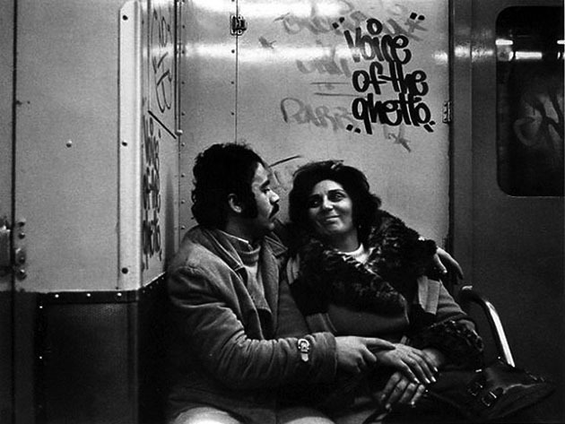
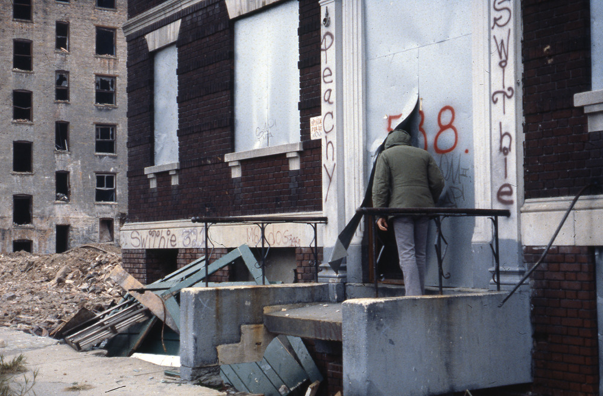
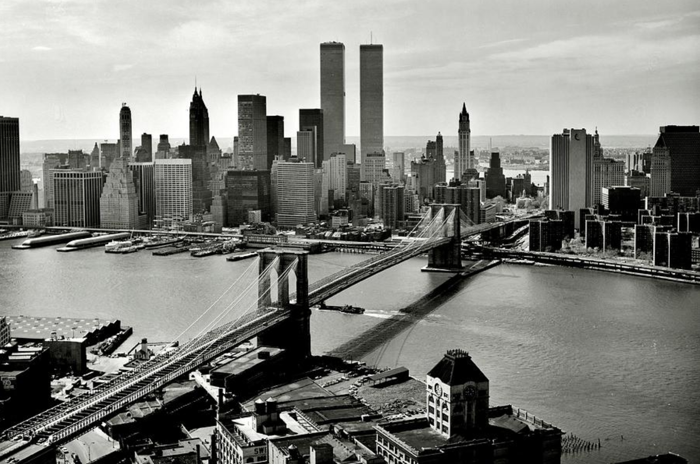
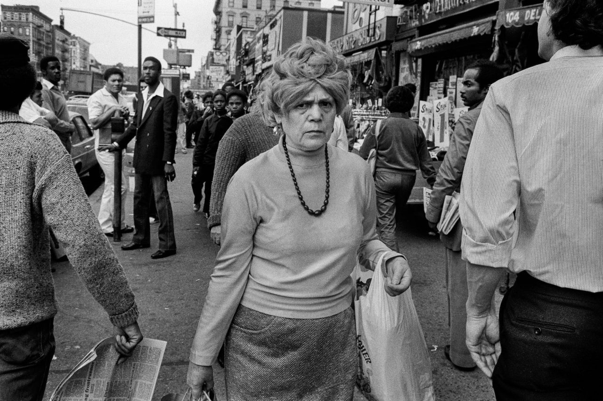
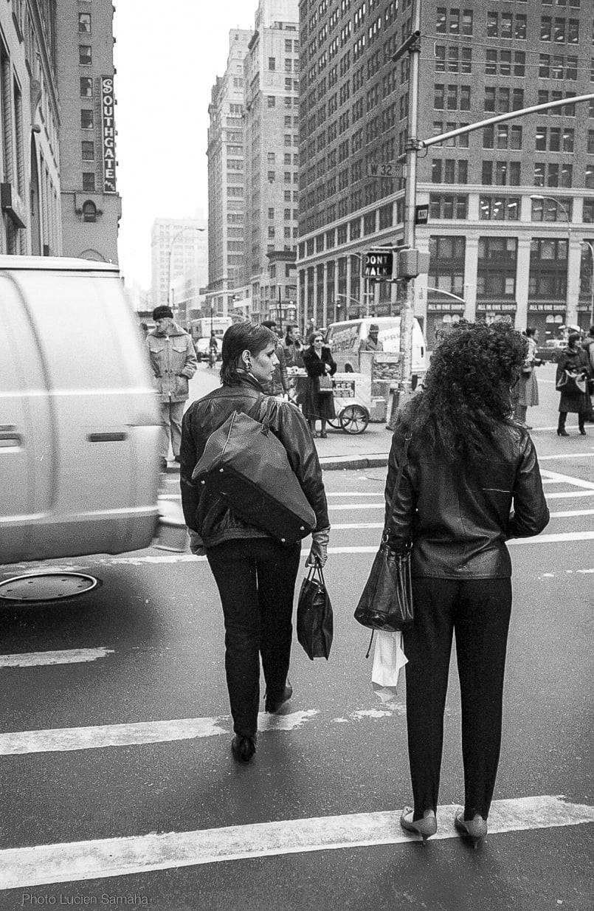

1970 New York
1970 New York

Word.
Couldn’t be any more 80s.
Harlem, 70s (at Harlem)

F.B. Grunzweig, Central Park Playground, New York City, c. 1974.

No loitering my ass

CultureHISTORY: New York, 1978 - Photo by Helen Levitt

1976. When shorts were short.

Coney Island, 1993
Photo by Gregoire Alessandrini

Gimme shelter. Bronx 1978

Brooklyn Bridge, 1978

Spanish Harlem, 1987. Haunting.

Goin’ yard

She mad.

1982, near Penn Station

Alphabet City, 1978